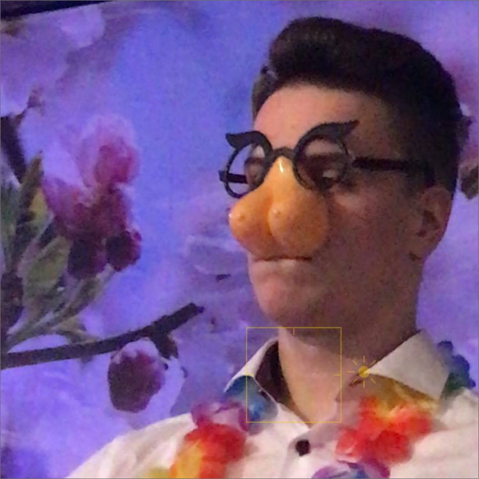

Cześć wszystkim! Nazywam się Dorian Kuliński,
mam 19 lat i Auid A4
B8, drugi właściciel, pierwszy w polsce
Galeria
Tekst w przezroczystym box-sie
Ulubiony kwiatek
Kwiato
Moim ulubionym kwiatem jest mój kolega Kwiato, zapalony gracz fify i znany zawodnik piłki nożnej z dalekich stron!
AUDI
Jak można zauważyć jestem fanem motoryzacji i jedynej słusznej marki samochodowej.
IDŹ DO SEKCJI ULUBIONE AUDICE
Jest to moja ulubiona marka, i niżej już pokazuje dlaczego
| AUDI | BMW |
|---|---|
| Szybka furka, przód napęd, trzyma się drogi | Tył mu tak ucieka że nie da się tym jeździć |
| Gładko wykonuje manewry, wchodzi w zakręty z gracją | Leci bokiem przy każdej możliwej okazji |
| Bezawaryjne auto | Pęka mu uszczelka pod głowicą |
| Kierowca to zazwyczaj biznesmen, filantrop sztuki | Kierowca to małpa która nie potrafi jeździć prawym pasem |
| Ma kierunkowskazy | Nie ma kierunkowskazów |
Typowy kierowca |
Typowy kierowca |
|  |
Pogoda
JAK DBAĆ O SWOJĄ AUDICE
- Myjemy przynajmniej raz w tygodniu
- Odkurzamy
- Zamykamy okna jak wychodzimy
- Upewniamy się czy na pewno jest zamknięta
MOJE ULUBIONE AUDICE
- AUDI A4B8 (moja) Zobacz na otomoto.pl
- AUDI A6C5 LIFT (kaji) Zobacz na otomoto.pl
- AUDI RS7 (WRRRUM)Zobacz na otomoto.pl
- AUDI A7 (FAJNE I DŁUGIE)Zobacz na otomoto.pl